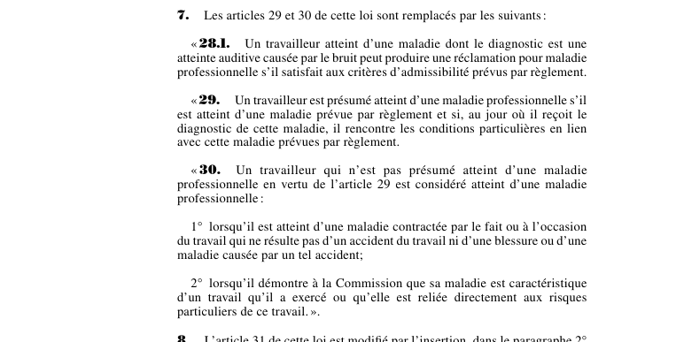

art-7-LMRSST : présomption et surdité professionnelle
Article modificateur qui remplace d'un bloc les art. 29 et 30 LATMP et profite de l'opération pour ajouter un art. 28.1 : le nouveau texte compte donc 3 articles, pas 2.
- Nouvel art. 28.1 : le travailleur dont le diagnostic est une atteinte auditive causée par le bruit peut réclamer pour maladie professionnelle s'il satisfait aux critères d'admissibilité fixés par règlement.
- Nouvel art. 29 : la présomption ne joue que pour les maladies prévues par règlement, et seulement si le travailleur rencontre, au jour où il reçoit le diagnostic, les conditions particulières également fixées par règlement.
- Nouvel art. 30, 1° : hors présomption, la maladie est reconnue si elle est contractée par le fait ou à l'occasion du travail sans résulter d'un accident du travail ni d'une blessure ou maladie causée par un tel accident.
- Nouvel art. 30, 2° : elle l'est aussi si le travailleur démontre à la Commission qu'elle est caractéristique d'un travail exercé ou reliée directement aux risques particuliers de ce travail.
📄 PDF officiel (page 9) · 🌐 LegisQuébec
Texte officiel
Les articles 29 et 30 de cette loi sont remplacés par les suivants :
« 28.1. Un travailleur atteint d’une maladie dont le diagnostic est une atteinte auditive causée par le bruit peut produire une réclamation pour maladie professionnelle s’il satisfait aux critères d’admissibilité prévus par règlement.
« 29. Un travailleur est présumé atteint d’une maladie professionnelle s’il est atteint d’une maladie prévue par règlement et si, au jour où il reçoit le diagnostic de cette maladie, il rencontre les conditions particulières en lien avec cette maladie prévues par règlement.
« 30. Un travailleur qui n’est pas présumé atteint d’une maladie professionnelle en vertu de l’article 29 est considéré atteint d’une maladie professionnelle :
1° lorsqu’il est atteint d’une maladie contractée par le fait ou à l’occasion du travail qui ne résulte pas d’un accident du travail ni d’une blessure ou d’une maladie causée par un tel accident;
2° lorsqu’il démontre à la Commission que sa maladie est caractéristique d’un travail qu’il a exercé ou qu’elle est reliée directement aux risques particuliers de ce travail. ».
Texte de l’article 7 LMRSST, extrait de la couche texte du PDF officiel (page 9), sans OCR ni retouche. La capture ci-dessous et le PDF font foi.
{kind=link}

Toucher l'image pour l'agrandir🔗 Ouvrir a cette page : LMRSST.pdf : page 9
- Remplacement intégral de art. 29 LATMP et art. 30 LATMP.
- Ajout d'un article neuf, art. 28.1 LATMP, que l'ancien titre de cette note passait sous silence.
- Le renvoi au règlement devient la clé de voûte : liste des maladies, conditions particulières et critères d'admissibilité y sont désormais tous fixés.
Portée et effet
Adopté dans le cadre de la réforme de 2021 modernisant le régime de santé et de sécurité du travail, l'article 7 de la LMRSST refond le coeur de la reconnaissance des maladies professionnelles : voie réglementaire pour la présomption, porte d'entrée propre à la surdité causée par le bruit, et maintien d'une voie de preuve générale en deux branches. Le libellé exact des trois articles figure dans la capture officielle ci-dessus. Le chapitre I de la LMRSST réforme la LATMP : comité scientifique des maladies professionnelles, réadaptation et retour au travail, indemnités, procédures et recours.
La jurisprudence porte sur les dispositions modifiées, art. 28.1, art. 29 et art. 30 LATMP, et non sur l'article modificateur lui-même (les décisions et leurs PDF sont rassemblés sur la page de ces articles).
Voir aussi
- 🎯 Article(s) remplacé(s) : art. 29 LATMP, art. 30 LATMP
- ➕ Article(s) ajouté(s) au passage : art. 28.1 LATMP · atteinte auditive causée par le bruit : réclamation possible aux conditions du règlement.
- 🗓️ Entrée en vigueur : 6 octobre 2021 (voir art. 313 LMRSST)
- 📚 Chapitre : Chap. I : modifications à la LATMP
- ↑ Loi : LMRSST
Pages qui pointent ici (5)
- art-270-LMRSST : modifie l'art. 7 du Règlement (examens pulmonaires, mines) Recueil législatif
- art-29-LATMP : présomption de maladie professionnelle Recueil législatif
- art-30-LATMP : maladie professionnelle hors présomption Recueil législatif
- LMRSST : Chapitre I : Modifications à la LATMP Recueil législatif
- LMRSST : Chapitre IV : Règlements édictés et modifiés Recueil législatif